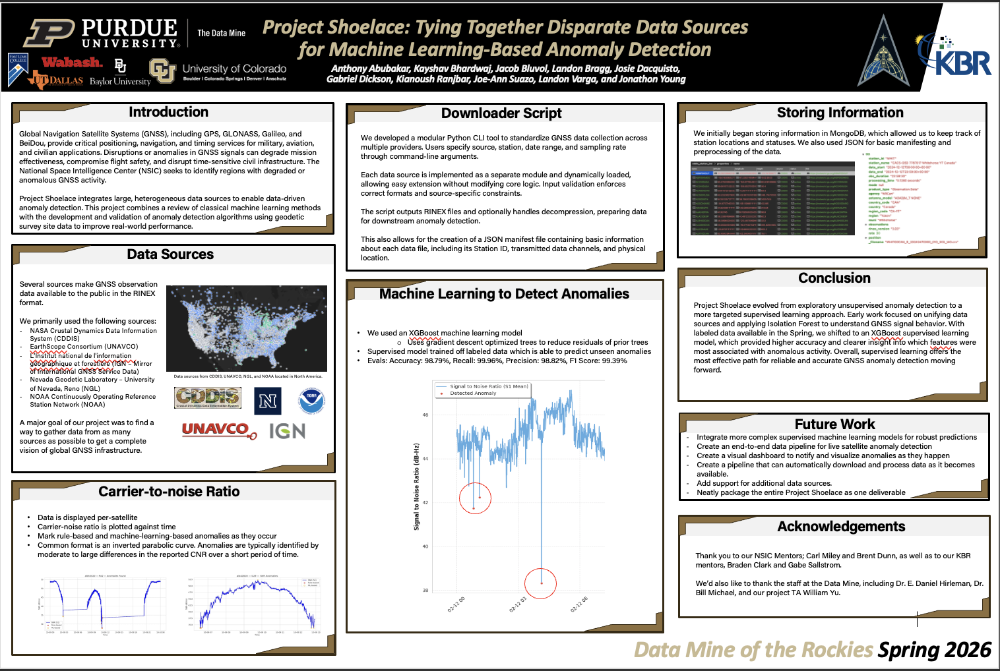
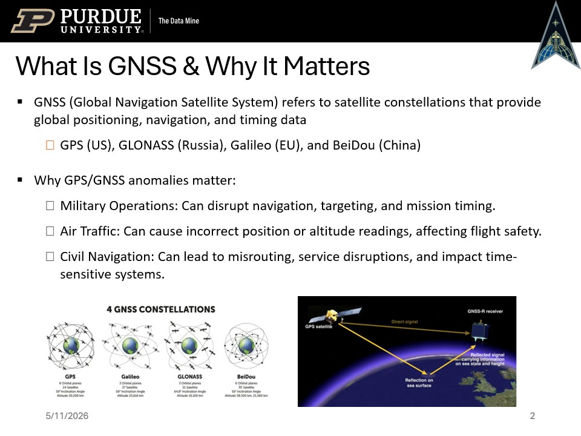
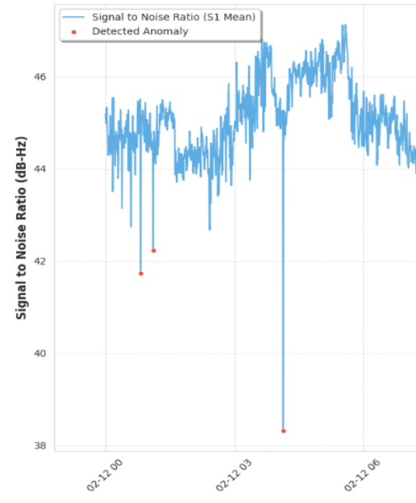
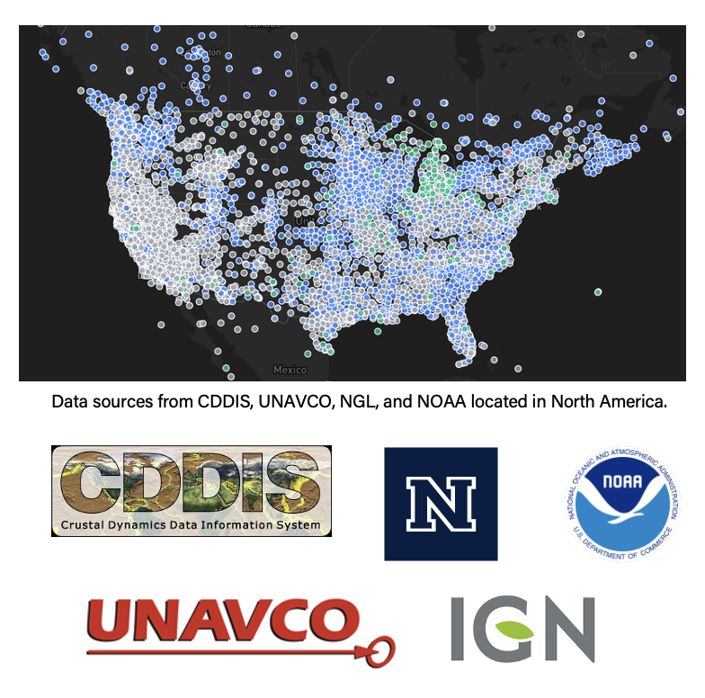
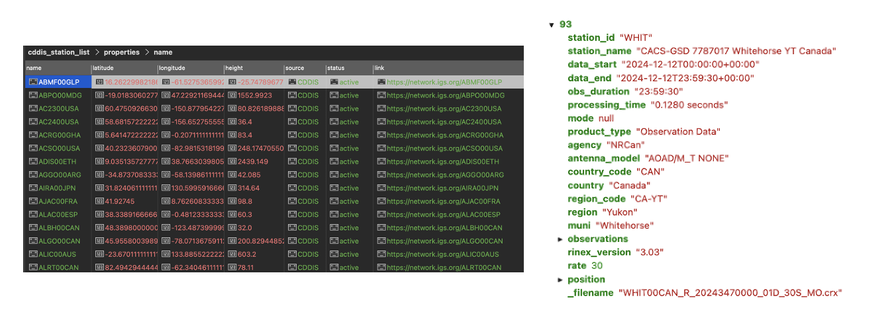
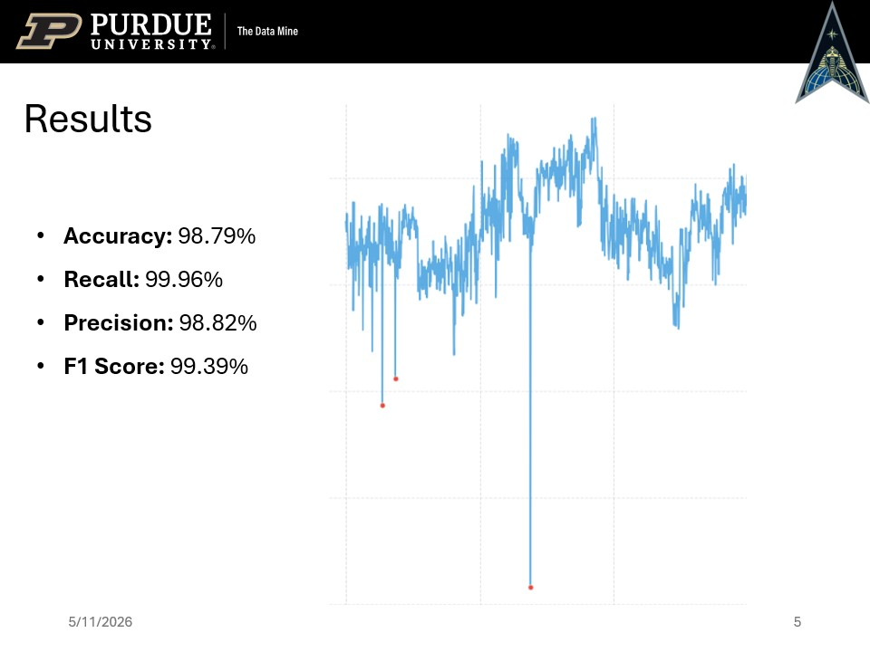
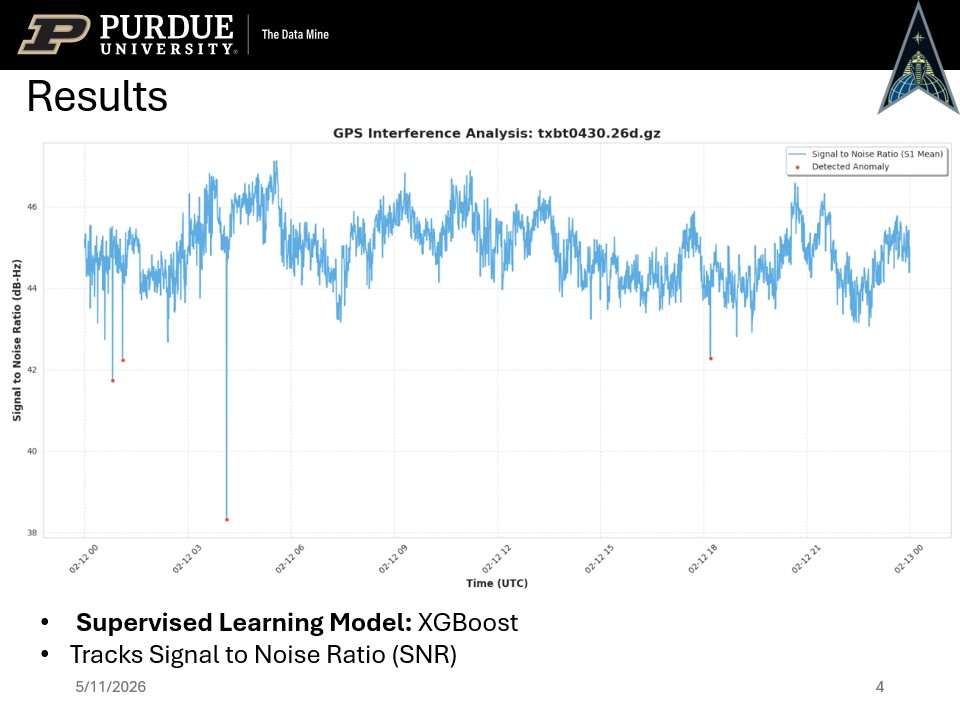
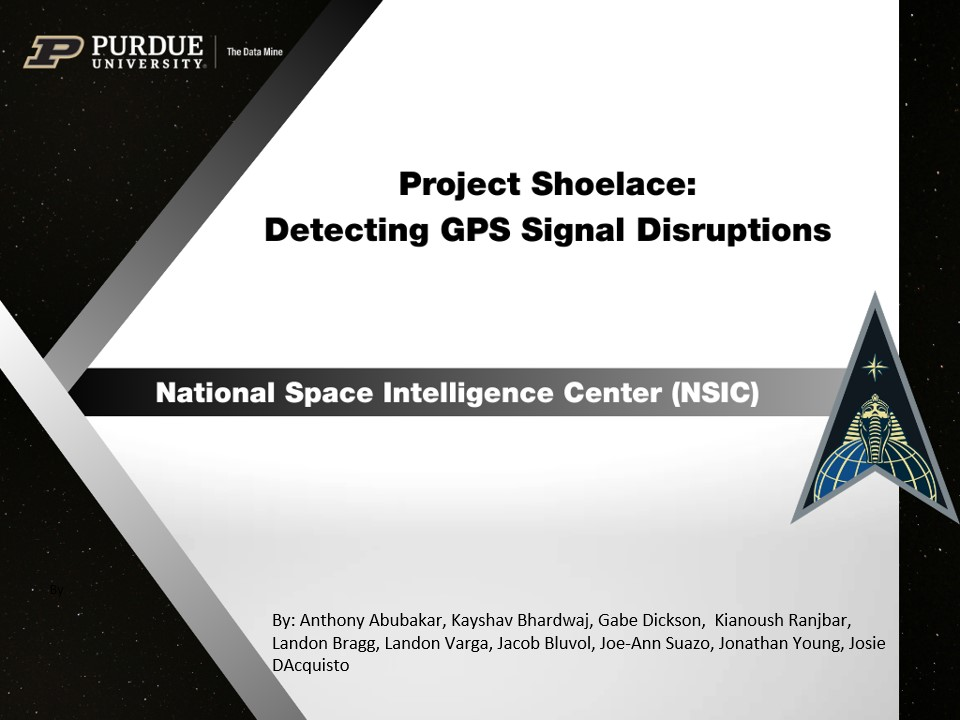
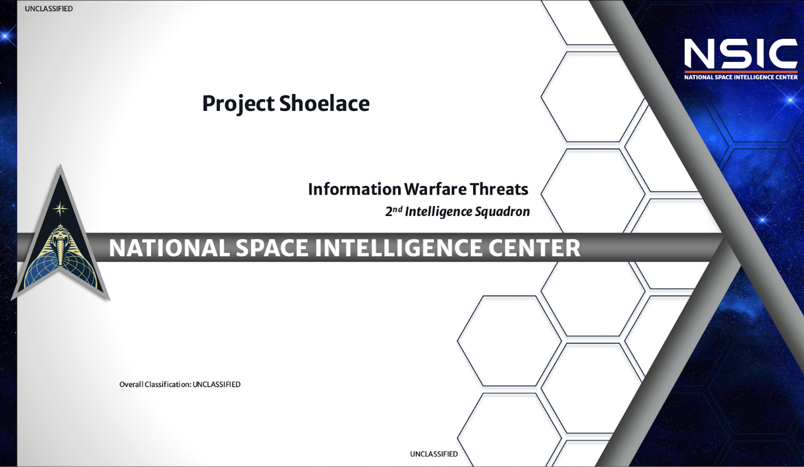

Project Shoelace: Detecting GNSS Signal Anomalies with Machine Learning

Over the course of 2026, I had the opportunity to work on a highly selective research project through The Data Mine of the Rockies in collaboration with the National Space Intelligence Center (NSIC) under the U.S. Space Force.
Our project, titled “Project Shoelace: Tying Together Disparate Data Sources for Machine Learning-Based Anomaly Detection,” focused on one of the most critical and complex systems in the world: Global Navigation Satellite Systems (GNSS).
Why GNSS Matters

GNSS includes systems such as GPS (United States), GLONASS (Russia), Galileo (European Union), and BeiDou (China). These satellite constellations provide positioning, navigation, and timing services that power everything from military operations to aviation and everyday navigation.
Disruptions in GNSS signals are not trivial. They can:
- Compromise military mission effectiveness
- Introduce risks in air traffic navigation
- Disrupt civilian infrastructure and time-sensitive systems
Given the scale and importance of GNSS, detecting anomalies quickly and accurately is a high-impact problem.
Project Objective
The core goal of Project Shoelace was to use machine learning and artificial intelligence to detect and predict anomalies in satellite signal data.

What We Built
Our team developed a complete data science pipeline that:
- Collected GNSS data from multiple global sources
- Processed and standardized the data
- Applied machine learning models to detect anomalies
Data Integration

One of the biggest challenges was working with fragmented and heterogeneous datasets. We integrated GNSS data from multiple providers including NASA CDDIS, UNAVCO, NOAA, IGN, and the Nevada Geodetic Laboratory.
To support this, we built a modular Python CLI tool that:
- Automates GNSS data downloads
- Handles decompression and formatting (RINEX)
- Generates structured metadata (JSON manifests)

Machine Learning Models
We explored both unsupervised and supervised approaches:
- Unsupervised: Isolation Forest for exploratory anomaly detection
- Supervised: Random Forest, XGBoost, Logistic Regression, Neural Networks, and LightGBM
After obtaining labeled data, we shifted toward supervised learning for better performance and interpretability.

Key Results
The project successfully delivered a working prototype capable of detecting GNSS anomalies with over 95% accuracy on test datasets.

More importantly, we demonstrated that machine learning can:
- Automate a previously manual detection process
- Improve reliability of satellite systems
- Enable faster response to potential interference or tampering
Challenges
This project was far from trivial. Some of the main challenges included:
- Limited availability of labeled data
- Handling extremely large datasets
- Integrating multiple inconsistent data sources
- Navigating communication and bureaucratic constraints
To overcome these, we implemented data optimization techniques, sourced data independently when necessary, and designed flexible tooling for ingestion and preprocessing.
Future Work
There is significant room to expand this project further:
- Develop more advanced models (research-level approaches)
- Build a real-time anomaly detection pipeline
- Create dashboards for visualization and alerting
- Expand data coverage across additional GNSS sources
Final Thoughts

Project Shoelace was a deeply technical and impactful experience that combined data engineering, machine learning, and real-world problem solving.
Working on a system tied to national infrastructure and space-based assets reinforced how critical reliable data systems are—and how powerful well-designed machine learning solutions can be when applied correctly.
This project also pushed me to operate at a higher level: dealing with ambiguity, large-scale data, and real constraints that don’t exist in typical academic settings.
Overall, it was one of the most valuable technical experiences I’ve had so far.
